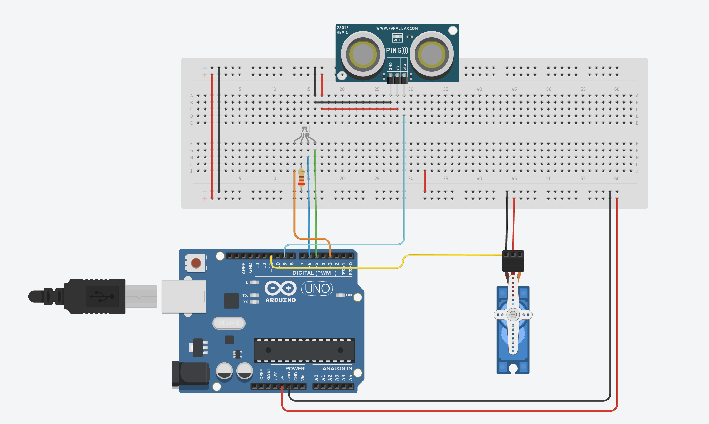
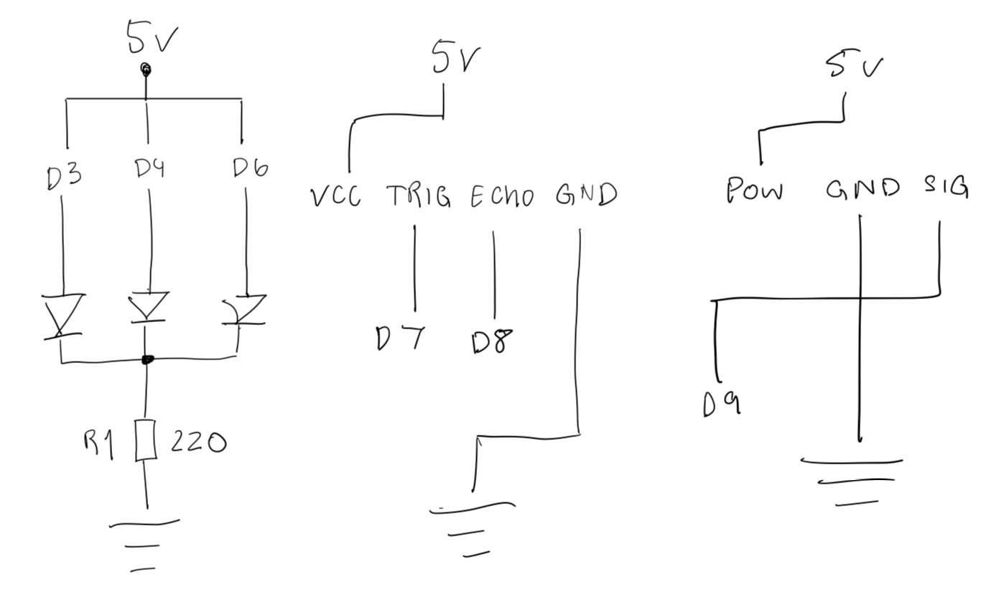

Voltage vs. Time Graph


This assignment measures how far a hand is from an
HC-SR04 ultrasonic sensor and a maps that distance to distinct colors on a
common-cathode RGB LED as well as physical displacements on a Servo Motor.
The sketch outputs the measured distance to the Serial Monitor and visualizes proximity levels
through color indicators and corresponding servo angles (e.g., red at 90°, blue at 0°).
The firmware uses NewPing.h to handle echo timing and distance conversion, and Servo.h to position the servo according to detected distance.
Distances are shown in inches and divided into six evenly spaced color
bands from 0–20 in.
// ---------------------------------------------------------
// A4: Hand Distance — HC-SR04 + RGB LED (NewPing) + Sero (Servo.h)
// Wiring:
// HC-SR04: VCC->5V, GND->GND, TRIG->D7, ECHO->D8 SERVO_PIN->D9
// RGB LED (common-cathode): R->D3, G->D5, B->D6 (each with 220Ω), cathode->GND
#include Servo.h
#include NewPing.h
// Pin setup
#define TRIG_PIN 7
#define ECHO_PIN 8
#define SERVO_PIN 9
#define LED_R 3
#define LED_G 5
#define LED_B 6
// Ultrasonic settings
#define MAX_DISTANCE 100 // inches
NewPing sonar(TRIG_PIN, ECHO_PIN, MAX_DISTANCE);
// Objects
Servo myServo;
// Distance thresholds (inches)
const int FAR_THRESH = 20;
const int MID_THRESH = 10;
const int CLOSE_THRESH = 5;
void setup() {
myServo.attach(SERVO_PIN);
pinMode(LED_R, OUTPUT);
pinMode(LED_G, OUTPUT);
pinMode(LED_B, OUTPUT);
}
void loop() {
float distance = sonar.ping_in(); // distance in inches
// Safety check for out of range readings
if (distance == 0 || distance > FAR_THRESH) {
distance = FAR_THRESH;
}
// === Distance logic ===
if (distance > MID_THRESH) {
// Far (safe distance)
setLED(0, 255, 0); // Green
myServo.write(0);
}
else if (distance > CLOSE_THRESH) {
// Medium distance
setLED(0 ,0 , 255); // Blue
myServo.write(45);
}
else {
// Close range
setLED(255, 0, 0); // Red
myServo.write(90);
}
delay(100); // Small delay for stability
}
// RGB LED helper
void setLED(byte r, byte g, byte b) {
analogWrite(LED_R, r);
analogWrite(LED_G, g);
analogWrite(LED_B, b);
}

Servo.h library.NewPing.ping_cm() and converted to inches with cm / 2.54.
If the sensor gives a bad reading about 1% of the time, take multiple samples and use the most reliable one.
r1 = getSensorValue();
r2 = getSensorValue();
r3 = getSensorValue();
reading = median(r1, r2, r3); // use middle value
If measurements fluctuate by ±10%, average several readings to smooth the noise.
const int N = 5;
sum = 0;
for (i = 0; i < N; i++) {
sum += getSensorValue();
}
reading = sum / N;
Or use exponential smoothing for continuous updates:
alpha = 0.2;
reading = alpha * newValue + (1 - alpha) * oldReading;
I used ChatGPT to structure the documentation in assignment 2 and 3 format, choose clean distance bands (0–20 in), and simplify the firmware using NewPing so I didn’t need to manage raw echo pulse timing. I verified wiring and thresholds on the bench and used the Serial Monitor for quick distance checks.